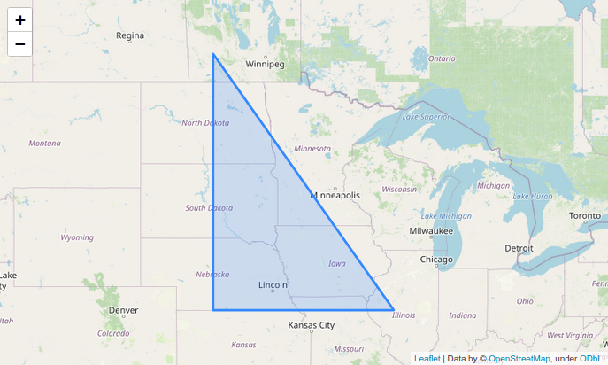
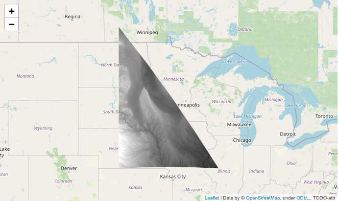
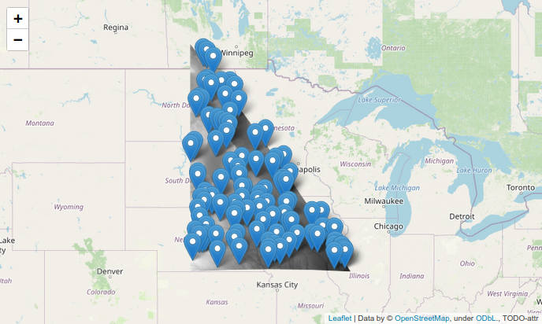
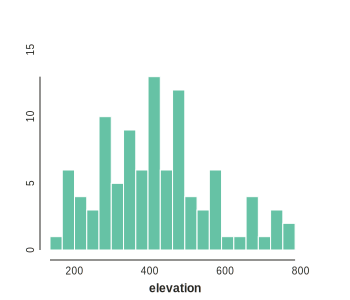

Raster analysis in Google earth engine
In this tutorial you will be introduced to the raster image visualization and analysis in the context of geospatial analyses using the Google Earth Engine REST API. Rasters are bitmap images, with values assigned to grid cells that can be overlaid on a map. So far we have examined pre-existing rasters as tilesets on maps that are fetched from a REST API to visualize a baselayer containing information like land cover, roads, borders, etc. These base layers are often used as a background on which vector data is plotted on top as the true focus of analyses (e.g., points or polygons). However, raster data itself can serve as an incredibly rich source of information not only for producing vector information, but also for representing variation in measured variables using raster visualizations.
In fact, raster visualization has spurred an entire field of geospatial analyses around the concept of remote sensing data. This involves analyses of global datasets that typically use satellite images composing measurements over multiple spectra, which provides reflectance data informative about climate and land cover. Because these images are repeated on uniform cycles time-series analyses of these images can further provide measurement of changes over time in weather, climate, and land-use. For these reasons remote-sensing data has become a central part of conservation and biodiversity science. The data available from the largest remote-sensing datasets is truly incredible. Check out the descriptions of the LandSat, MODIS, and Sentinel datasets here.
The image below is a beautiful example, showing a series of images that are joined to create a GIF movie. In these images a raster layer is used to show temperate values as a linear colormap (blue to green to yellow to red), and this is projected with a low opacity over another layer showing elevation/topography. Together, the image clearly show the insolating effect of mountains versus lowland in temperature fluctuations over some amount of time. This example comes from the Google Earth Engine documentation, which we will soon explore.

Sign up for earthengine
To get started using Google earthengine you will need to first signup with a gmail account. Your University account is probably best to use, since you can likely take advantage of extra free storage space. https://signup.earthengine.google.com/. The approval process was nearly instant when I tested recently.
What is Google earthengine
Google earthengine (abbreviated ee here) is a REST API service provided
by Google that allows you to make programmatic requests to their servers
to access data and cloud-based computing functions to operate on data. The
final result will be a REST API URL for a vector or raster dataset that can
be fetched and visualized on a map, like with folium.
The instructions for creating the particular dataset you want to access are sent from you to Google in JSON format, and has a fairly complicated structure. Therefore, Google developed two programmatic APIs for building and sending the JSON requests, based on instructions that you can write in JavaScript or Python code. The JavaScript version is the default, and is much better documented. The Python API can do pretty much everything the JS version does, but figuring out how to translate from one set of instructions to the other takes some practice. Fortunately, you’re all Pythonistas by now, and should be able to figure it out.
We’ll discuss some of these differences, starting with the first major one,
which is that in Python we will need to use the folium library to visualize
maps, rather than the JavaScript Map object. Thus, this tutorial will build
off of our last tutorials that introduced folium.
Getting the earthengine Python API
As usual, you can install the package from conda-forge.
conda install -c conda-forge earthengine-api
Why use earthengine?
The data
Google hosts a huge number of large and complex datasets. This includes
both raster images and vector data. The raster data is often in the form
of ImageCollection objects, which represent series of images such as time
series. You can search these datasets in the earthengine data catalog. These datasets are
very interesting to analyze on their own, but they can also be treated
as raw data (measurements in cells) and combined in creative ways using
mathematical and statistical operations, to generate new raster layers
representing new values. This ability to combine and analyze existing large
datasets to create new measurements is really the bread and butter of
remote sensing analyses.
The workflow
Working with such enormous image data collections can be extremely cumbersome. Just the process of downloading the images could take hours. For this reason, EarthEngine was designed to perform calculations in the cloud, where the data is already located. This is why the workflow is centered around you sending instructions for how to analyze the data, rather than having Google send all the data and then you analyze it on your computer. In fact, the entire earthengine workflow is built around the concept of delayed execution: it does not run the computation (fetch data and compute on it) until after you’ve written a full set of all the instructions you plan to run. This is great because it makes everything run much faster and more efficiently. However, it involves a steep learning curve to understand how to actually view the data in Python, and also how to write the most efficient set of instructions (there is a lot on this topic in the documentation).
The library
The documentation for earthengine is quite good. Although
the Python API is less well documented than the JavaScript version, it is
easy enough to translate from one to the other once you get a hang of it. You
can combine vector and raster data from earthengine objects in folium
with raster and vectors from other Python geospatial libraries that we learned
about in previous tutorials. But, a nice thing about the earthengine library
(ee) is that it provides many of these same functions (and using a similar
syntax) in a single library. For example, the ee.Feature and ee.Geometry
objects serve the same purpose as geojson.Feature and geojson.Geometry,
or of shapely.geometry objects that we learned previously. Thus, you can
add any of these vector objects to a folium map by making them into
GeoJSON and using .add_child().
The community
In addition to the enormous work that Google has done in setting up this resource, it is largely used by and maintained by academics. And that’s a good thing. There are tons of tutorials and datasets created by users and made publicly available for the broader community. And when you create new datasets you can share them through the earthengine data catalog.
How to learn earthengine
Visit the official API documentation. I recommend starting with the “Get Started” section, and then going over the entire “API Tutorials” section. In addition, the Python section will be helpful for understanding how to change the JS instructions to work in Python. You don’t need to read all of it now, but it is your best resource for reference in the future.
The JavaScript console
To follow along with JavaScript-based tutorials you can enter data directly into the interactive console to generate plots. This is really cool since you can save the code and visualization, and even share a link to share this with others. All of the computing is done remotely, so you don’t even need to install anything locally to use it. The drawback of this approach, of course, is that you can’t integrate the code with your Python workflow, and you likely need to learn more about writing JavaScript.
Earthengine in Python/jupyter
Let’s get started using the earthengine Python API. Follow along in a
jupyter notebook.
To start you will need to import ee and folium, and then to call
Authenticate and Initalize from ee. The Authenticate call only needs to
be made once, then you can remove the code block from your notebook.
It will open your browser and ask you to login with Google. After
that your browser will store a token to remember who you are. After this
whenever you call ee.Initialize() Google will know that you have logged
in, and any work that you ask it to do (e.g., REST API requests)
should be charged to your account quota.
import ee
import folium
# opens browser to request authenticatication token (OAUTH2) and store it.
ee.Authenticate()
# uses your stored auth token to login to ee.
ee.Initialize()
A custom Map class object
To support adding an ee raster to a folium Map we need to create a custom
function or class. I prefer to do this by subclassing the folium.Map object.
This creates a new class called EngineMap which inherits all of the same
attributes and functions of a folium.Map class object, but also has the two
additional functions below which can add an ee vector or raster object to
the map. You don’t need to fully understand this code now, but I recommend
revisiting it later after you’re more experienced in earthengine to see what
the two functions are doing:
class EngineMap(folium.Map):
"""
Subclass of folium Map for adding EE images. Here
self is a folium.Map class instance, and we are adding
additional functions to this class type.
"""
def __init__(self, location=None, zoom_start=None, **kwargs):
# inherit from parent class
super().__init__(location=location, zoom_start=zoom_start, **kwargs)
def add_ee_vector(self, feature, **kwargs):
"""
Add a google earth engine vector feature to a folium map.
"""
# create vector feature
feature = folium.GeoJson(
data=feature.geometry().getInfo(),
**kwargs,
)
# add vector to Map and return self to allow chaining
self.add_child(feature)
return self
def add_ee_raster(self, image, vis_params={}, **kwargs):
"""
Add a google earth engine raster layer to a folium map.
"""
# handle ImageCollections and Images
if isinstance(image, ee.ImageCollection):
ee_image = image.mosaic()
# get the JSON instructions to show image tiles
map_id_dict = image.getMapId(vis_params)
# get url of the raster tiles
tiles = map_id_dict['tile_fetcher'].url_format
# create a folium raster layer and add to self
raster = folium.raster_layers.TileLayer(
tiles=tiles,
attr=kwargs.get("attr", "TODO-attr"),
name=kwargs.get("name", "test"),
overlay=True,
control=True,
)
# add raster to Map and return self to allow chaining
self.add_child(raster)
return self
Adding vectors
First things first, we can create vectors as GeoJson structured objects composed of Feature objects with a Geometry. This object can be used like a shapely geometry object to do all sorts of computations on geometries. Also, we can add it as a vector on the map.
# create an ee vector object
region = ee.Feature(
ee.Geometry.Polygon([
[-100, 40],
[-90, 40],
[-100, 50],
])
)
# create a map
emap = EngineMap()
# add ee vector feature
emap.add_ee_vector(region)
# focus location/bounds of the map on its child features
emap.fit_bounds(emap.get_bounds(), max_zoom=5)
emap

Adding rasters
Raster datasets can be accessed from the google earthengine data catalog by
name using the ee.Image class. We’ll discuss more details of just what is
possible with Image class objects later. Let’s start by adding it to the map
and setting visual parameters to tell the map how to apply colors to the values,
in this case black=0 and white=3000. This dataset is composed of elevation
values, and the region we are showing is centered on the Grand Canyon.
# load a raster Image dataset from ee
raster = ee.Image('CGIAR/SRTM90_V4')
# create a map
emap = EngineMap(location=(36.2841, -112.8598), zoom_start=9)
# add raster to map
emap.add_ee_raster(raster, vis_params={'min': 0, 'max': 3000})
emap

Using vectors and rasters
In addition to showing vectors on a map, they can also be used as selectors to clip raster data to only process or show data for smaller regions. This can increase the speed of your code and visualization. Here we select a triangular shaped region around the Missouri river.
# load a raster Image dataset from ee
raster = ee.Image('CGIAR/SRTM90_V4')
# create a map
emap = EngineMap([45, -95], zoom_start=5)
# clip raster to polygon region of interest
clipped = raster.clip(region)
# add raster to map
emap.add_ee_raster(clipped, vis_params={'min': 0, 'max': 800})
# show it
emap

Measurements on data
In addition to visualizing data, we can also sample data for performing
statistics. There are a number of methods for sampling, the simplest of which
is called .sample(). Here we select points from the clipped region of the
raster image. Once the data is extracted we can operate on it further with
numpy or pandas. The extracted data will be in GeoJson format, with features
representing Point geometries with property attributes that include the data.
# returns a featureCollection of points with property['elevation']
points = raster.sample(region=region, numPixels=200, geometries=True)
# load a raster Image dataset from ee
raster = ee.Image('CGIAR/SRTM90_V4')
# create a map
emap = EngineMap([45, -95], zoom_start=5)
# clip raster to polygon region of interest
clipped = raster.clip(region)
# add raster and vector points to map
emap.add_ee_raster(clipped, vis_params={'min': 0, 'max': 800})
emap.add_ee_vector(points)
# show it
emap

To extract data from the GeoJson features in the points variable we need to
dive into the nested JSON (dictionary) structure. In addition, we need to call
.getInfo() to tell earthengine to actually do the sampling (to not defer
execution). Then I plot a histogram and compute the mean.
import numpy as np
import toyplot
# extract elevation values
elevs = (
[feature['properties']['elevation']
for feature in points.getInfo()['features']]
)
# plot a histogram
toyplot.bars(
np.histogram(elevs, bins=20),
height=300,
width=350,
xlabel="elevation",
);
# return the mean
print("mean elevation: {}".format(np.mean(elevs)))
mean elevation: 421.63

Summary
We introduced the Google EarthEngine Python API (ee) for accessing data
and cloud computing from the earthengine REST API. Then we added vectors
and raster, and used vectors to clip the region of the raster, and to sample
points (data) from the raster. Using these simple operations on the enormous
datasets available on the Google Earthengine data catalog you can collect and
analyze data at incredible scales easily in Python. This is just the tip of
the iceberg. In the next tutorial we will dive deeper into raster data.